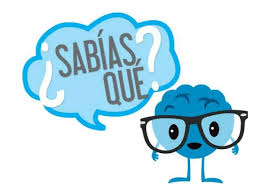

Matemáticas
Las matemáticas es una ciencia formal que, partiendo de axiomas y siguiendo el razonamiento lógico, estudia las propiedades y relaciones entre entidades abstractas como números, figuras geométricas, iconos, glifos, o símbolos en general. La matemática en realidad es un conjunto de lenguajes formales que pueden ser usados como herramienta para plantear problemas de manera no ambigua en contextos específicos.
Operaciones Básicas
Las operaciones básicas son:
¿Cuál es la importancia de las Operaciones Básicas?
Las Operaciones Básicas son fundamentales para el desarrollo intelectual de los niños, les ayuda a ser lógicos, a razonar ordenadamente y a tener una mente preparada para el pensamiento, la crítica y la abstracción.
 Para más Información haz clic en este Enlace:
Para más Información haz clic en este Enlace:

Lleva goma de mascar a tu próximo examen de matemáticas
Según se ha observado globalmente, aquellos estudiantes que durante una prueba o un examen de matemáticas mastican goma de mascar son los que consiguen mejores calificaciones.